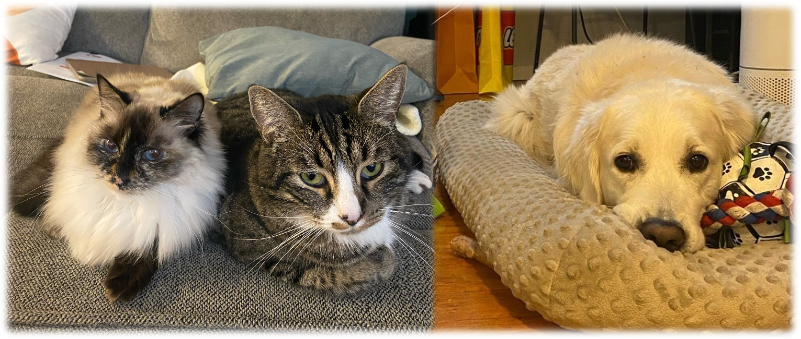

Senior ML Engineer @ Google Research
I'm a Senior Machine Learning Engineer in Google Reseach, my current focus lies in applied research for real-time, on-device technologies in the fields of Computer Vision and Machine Learning. My expertise encompasses scene understanding, deep generative modeling, and representation learning. Before joining Google, I was an Applied Scientist at Amazon, where I developed innovative RGB-only computer vision algorithms for a range of products. This role followed my graduation from the MSCV program at Carnegie Mellon University's Robotics Institute, under the guidance of Prof. David Held and Kris Kitani.
My passion is in transitioning AI technology from academic theory to practical, real-world applications. Recently, I mainly focus on Generative AI, scene understanding and the development of advanced vision technologies for mobile devices, including the Face Unlock feature on Google's Pixel 8a, 9 & 9 Pro & XL & Fold (Made by Google '24), Pixel 8 and 8 Pro (Made by Google '23), Pixel Fold & 7a (Google I/O'23), Pixel 7 & 7 Pro (RGB-based, Made by Google '22). Before Google, I was part of a research team at Amazon, contributing to the development of vision-only technologies for the pioneering Just-Walk-Out (JWO) grocery store, also known as Amazon Go. Additionally, I have made significant contributions to Amazon Prime Video's Video Compliance System and the Virtual Product Placement feature, both of which are utilized globally.
I have "twocatsandadog" (yes, that's my Wi-Fi password). The biggest boy cat, Noodle, only comes back home for food and sleep, and spends the rest of his life playing with the squirrels and birds in the wild. The sister cat, Pudding, is a little princess sleeping on the sofa all day. And the little brother, JoJo, is the famous White Golden Retriever in the neighborhood who likes to scramble in the mud!
